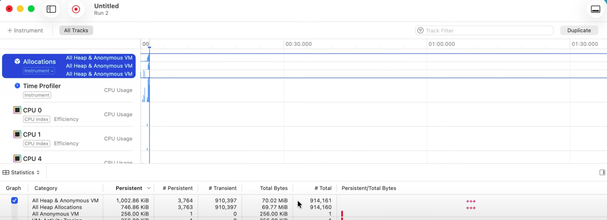

[WWDC25]Swift 성능 최적화: 불필요한 할당 줄이기
- https://www.youtube.com/watch?v=LzBZjwEY9as&list=TLGGzZB-ElPYOYAyMDA3MjAyNQ
이전 편에서 Time Profiler를 통해 불필요한 데이터 복사를 최적화했다. 이번에는 과도한 메모리 할당이라는 또 다른 주요 성능 저하 요인을 해결하여 추가적인 성능 개선을 달성하는 방법을 다룬다.
1. 문제 진단: Allocations 도구 활용
성능 저하의 주요 원인 중 하나는 빈번하고 불필요한 메모리 할당이다. 특히 Array 같은 컬렉션 타입의 할당/해제는 비용이 크다. QOI 이미지 파서 앱에서도 이 문제가 확인되었다.
이 문제를 진단하기 위해 Instruments의 Allocations 도구를 사용한다. 프로파일링 결과, 한 장의 이미지를 파싱하는 과정에서 백만 건에 가까운 할당이 발생했으며, 대부분 “수명이 짧은(short-lived)” 임시 할당으로 나타났다. 이는 명백히 개선이 필요함을 시사한다.

- 첫째로 이미지 하나를 파싱하는데 메모리 할당이 100만개나 발생할 이유가 없다는 부분에서 의심을 시작한다.
- 둘째로 대부분 (91만개)의 할당이 일시적(Transient) 할당이다.
2. 비효율적인 할당 패턴: flatMap 체인
Allocations 도구의 Call Tree 뷰 분석 결과, flatMap과 prefix로 구성된 복잡한 체인이 문제의 원인으로 지목되었다.

특히 RGBAPixel.data 메서드가 호출될 때마다 3-4개의 요소를 가진 새 배열을 반환하며 할당을 유발하는 것이 확인되었다.
이러한 flatMap 체인은 코드를 간결하게 만들지만, 내부적으로 여러 단계의 중간 배열 생성과 병합을 반복한다.
// MARK: - 문제 코드 예시: 비효율적인 할당을 유발하는 flatMap 체인 (영상에서 발췌)
// QOIParser.swift 파일 내의 parseQOI 함수 일부
func parseQOI(from input: inout Data) -> QOI? {
// ...
let pixels = readEncodedPixels(from: &input)
.flatMap { decodePixels(from: $0) } // [EncodedPixel] -> [RGBAPixel]
.prefix(header.pixelCount) // 필요한 픽셀 수만큼 제한
.flatMap { $0.data(channels: header.channels) } // [RGBAPixel] -> [UInt8] (픽셀 데이터)
return QOI(header: header, data: Data(pixels))
}
- 위 코드에서
readEncodedPixels는 인코딩된 픽셀 데이터를 파싱하고,.flatMap { decodePixels(from: $0) }는 각 인코딩된 픽셀을 RGBA 픽셀 배열로 디코딩합니다. - 이 과정에서 각 픽셀마다 작은 배열들이 생성되고, 첫 번째
flatMap은 이 작은 배열들을 하나의 더 큰 배열로 병합합니다. - 이후
.flatMap { $0.data(channels: header.channels) }는 각RGBAPixel을 3-4 바이트의 또 다른 작은 배열로 변환하고, 이 배열들이 다시 최종적으로 가장 큰 새 배열로 평탄화됩니다.
이러한 과정은 코드를 간결하게 보이지만, 내부적으로는 수많은 임시 배열을 생성하고 소멸시키며 과도한 메모리 할당/해제 비용을 발생시킨다.
3. 해결책: 최종 데이터 크기 사전 계산 및 직접 작성
앞서 아래와 같은 분석을 했다.
- Instruments의 Allocations 도구로 약 백만 건에 가까운 임시 할당을 확인
- 특히
RGBAPixel.data메서드가 호출될 때마다 작은 배열을 생성하고 반환 - 이는 주로
flatMap과prefix체인에서 작은 배열들을 반복적으로 생성하고 병합하는 비효율적인 패턴
비효율적인 중간 할당을 제거하기 위해, 최종 데이터 크기를 미리 계산하고 미리 할당된 공간에 데이터를 직접 작성하는 방식으로 접근한다.
- 최종 크기 사전 계산: 결과 데이터의 총 크기(
totalBytes)를 미리 계산한다.header.pixelCount와header.channels를 사용
- 메모리 한 번에 할당: 계산된
totalBytes만큼의Data인스턴스를 단 한번만 할당한다. - 데이터 직접 작성:
offset변수를 사용하여 기록 위치를 추적하며, 각 픽셀을 디코딩하여 미리 할당된 공간에 직접 데이터를 쓴다.
extension QOIParser {
func parseQOI(from input: inout Data) -> QOI? {
// ...
var offset = 0
// 'offset'이 'totalBytes'에 도달할 때까지 픽셀 데이터를 계속 파싱하고 작성합니다.
while offset < totalBytes {
// 다음 인코딩된 픽셀을 파싱합니다. 파싱에 실패하면 반복을 중단합니다.
guard let nextPixel = parsePixel(from: &input) else { break }
// 파싱된 픽셀의 유형에 따라 처리합니다.
switch nextPixel {
// 런(Run) 타입 픽셀: 이전 픽셀을 'count'만큼 반복하여 출력합니다.
case .run(let count):
for _ in 0..<count {
// 'state.previousPixel'의 데이터를 미리 할당된 'pixelData'에
// 'offset' 위치부터 직접 작성합니다. 이 과정에서 임시 배열 생성 없이 바로 메모리에 씁니다.
state.previousPixel
.write(to: &pixelData, at: &offset, channels: header.channels)
}
// 그 외 다른 타입의 픽셀: 단일 픽셀을 디코딩하여 출력합니다.
default:
// 디코딩된 단일 픽셀 데이터를 미리 할당된 'pixelData'에
// 'offset' 위치부터 직접 작성합니다.
decodeSinglePixel(from: nextPixel)
.write(to: &pixelData, at: &offset, channels: header.channels)
}
}
// 파싱이 완료된 헤더와 최종 픽셀 데이터(pixelData)를 사용하여 QOI 객체를 반환합니다.
// 이 최종 'Data' 인스턴스만이 결과 이미지를 저장하기 위한 유일한 할당입니다.
return QOI(header: header, data: pixelData)
}
}
4. 성능 개선 결과
수정된 코드를 다시 프로파일링하면 할당 수가 현저히 줄어든 것을 즉시 확인할 수 있다. QOI.init과 관련된 호출 필터링 시, 파서 코드가 단 몇 개의 할당만 수행하며 총 2MB 미만의 메모리를 사용함을 볼 수 있다. 결과 이미지를 저장하는 Data 인스턴스 외에는 거의 할당이 발생하지 않는다.

- 최적화 전의 스크린샷을 보면 약 68MB의 메모리를 사용했었다.
벤치마크 결과, 불필요한 할당 제거는 실행 시간을 절반 이상 단축시키는 놀라운 결과를 가져왔다.

- 앞서 포스트(Copying fix)랑 이번 포스트(Allocations fix)로 메모리뿐만 아니라 속도도 상당히 개선되었다.
결론 및 다음 편 예고
본 편에서는 Instruments의 Allocations 도구를 활용하여 flatMap 체인에서 발생하는 과도한 메모리 할당 패턴을 식별하고, 최종 데이터 크기를 사전 계산하여 한 번에 메모리를 할당한 후 데이터를 직접 작성하는 방식으로 최적화했다. 이를 통해 실행 시간을 절반 이상 단축시키는 중요한 성능 개선을 달성했다.
다음 편에서는 Swift 런타임 독점성 검사(_sanityCheckExclusiveAccess 제거)와 InlineArray를 통한 고급 메모리 최적화 기법을 탐구할 예정이다.